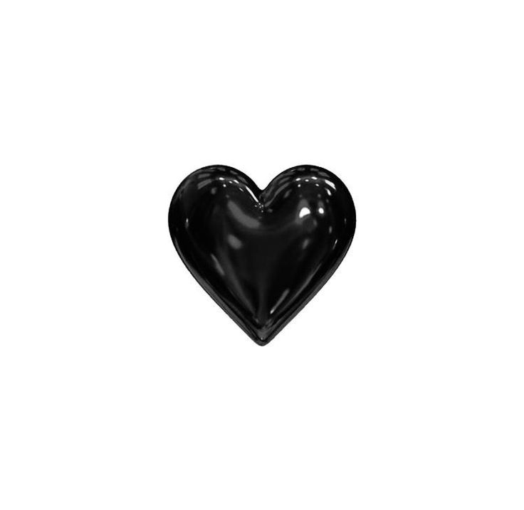

⋆ personal information |
⋆ personality traitsI consider myself to be an INFP. I am deeply drawn to stories that explore profound meaning, often gravitating toward movies, books, or shows that delve into themes of hope, humanity, and emotional connection. Immersing myself in fictional worlds feels natural, as I often form personal connections with characters. My imagination knows no bounds, and I frequently lose myself in daydreams or creative pursuits, whether through writing, drawing, or simply envisioning endless possibilities. I value solitude for self-processing and idealism, aiming to create a compassionate surroundings. I cherish my alone time because it allows me to reflect on my feelings and ideas, recharge, and regain my sense of clarity. My idealism is fuelled by this self-examination as I'm always thinking of ways to make the world nicer and more empathetic. I have a strong sense of empathy and experience a wide range of emotions, both my own and those of others. This allows me to build deep connections, but it may also feel overpowering at times. I am deeply moved by small deeds of generosity or overlooked beauty in the world, and I value real connections and experiences more than anything else. Motivated by my quest for meaning and purpose, I make an effort to live in line with my principles, constantly looking to express my inner self and make a constructive contribution to the world. |
⋆ goals and aspirationsMy goals and aspirations are deeply rooted in my desire to live a life of meaning and authenticity. I strive to make a positive impact on the world, whether by fostering kindness or championing causes that align with my core values, such as equality, compassion, and creativity. Personal growth is essential to me, and I aim to continually evolve by exploring my passions, honing my talents, and discovering new ways to express myself. I aspire to build genuine connections with others, seeking relationships that are meaningful and grounded in mutual understanding. My professional aspirations are to work in a field that is in line with my values; where I can be creative, help others, or advocate for significant change and to use my empathy and creative thinking to inspire others, whether through education, storytelling, or coming up with solutions to societal problems. At the same time, I want to strike a balance between my external contributions and my internal fulfillment, making sure that my life is driven by a strong sense of purpose and personal integrity.  |